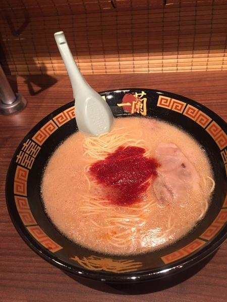

拉麵的湯是用豬骨去熬煮的，餐廳使用食券等點菜用紙，上面詳細描述客人所需要的口味、麵條的硬度。
再者，為了面向從海外來的觀光客，特別準備英語、漢語、韓語等三種菜單用紙。
由於是會員制的，店主會記住所有客戶的口味。
為解決當年不少女學生不喜歡在他人面前吃拉麵的問題，餐廳自1993年起採用獨立的座位空間設計（稱為味集中），
避免打擾其他用餐的人。希望食客可以享受屬於個人的空間，用餐過程毋須面對其他人。
台北市信義區松壽路11號位於新光三越A11館 B1
02-272-9986
24H供餐不打烊